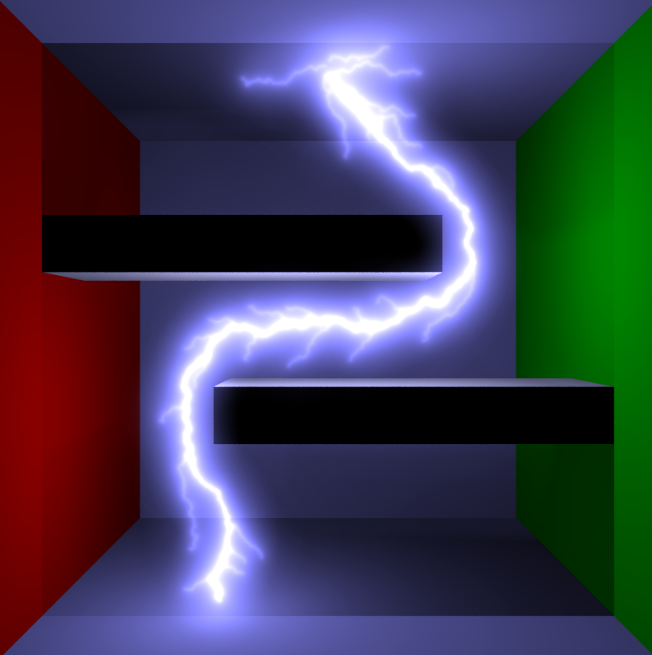
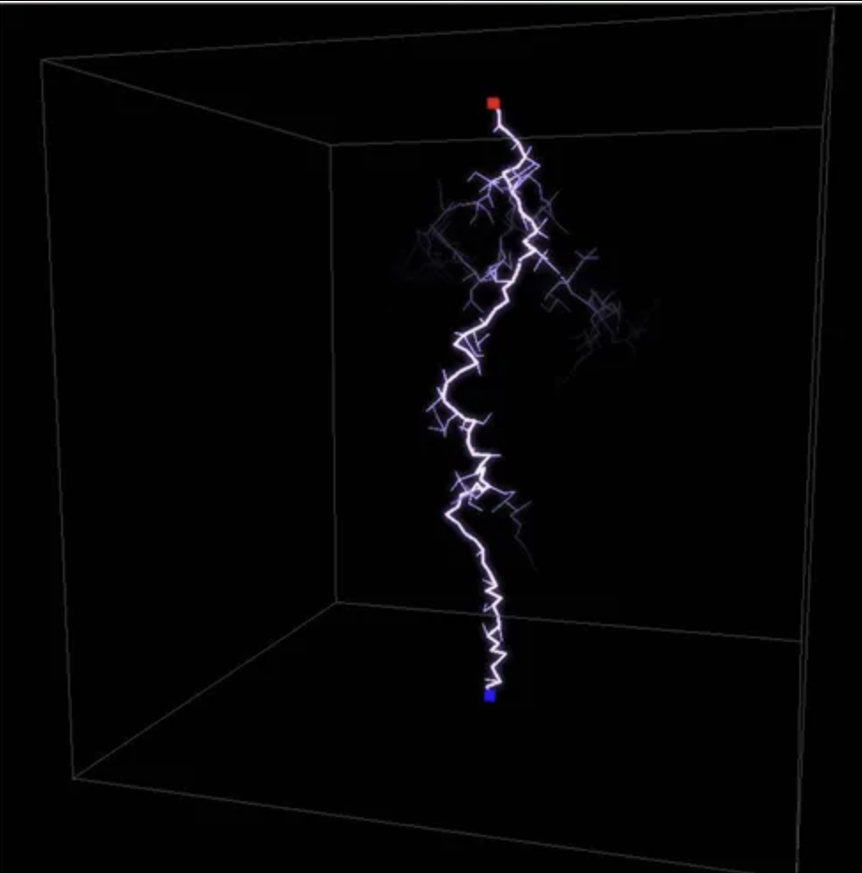
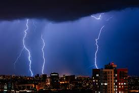

Realistic Lightning Simulation Project Proposal
Names: Jennifer Cao, Sonia Chacon, Claire Ding, James Ni
|

Simulated lightning from [1] (2004)
|

Simulated lightning from [3] (2017)
|
|

Real lightning, with volumetric illumination and incomplete arcs
|
Summary
We want to implement a realistic simulation of lightning with as realistic of lighting as possible. Our main focus will be creating a physically accurate algorithm for determining the path of the lightning and some extensions could include how lightning interacts in different weather conditions or with different objects at or near the site of the strike. Because physics are the focus, some initial plans on the platform include using Blender to perform light simulation, ray tracing, and volumetric scattering in the environment.
Problem Description
3D lightning effects are typically non-physically grounded, and focus on only creating a visually believable replica of lightning for special effects. Our main focus will be implementing the algorithm for the path the lightning takes using energy minimization principles from physics. To make the simulation of particles computationally efficient, we will use Monte-Carlo sampling at each step.
There are two main challenges:
-
implementing a modern, realistic model for generating the successive fractal paths which characterize lightning
-
modeling the luminance of the ionized particles based on thermodynamics
Goals and Deliverables
Our baseline plan is to replicate the implementation and result of Physically Based Animation and Rendering of Lightning [1] which presented a physically based algorithm for the simulation, animation, and rendering of sustained electric arcs.
However, we hope to extend this work as follows:
-
modeling physical effects specific to a Monte Carlo raytracer, which previous works do not use (custom pinhole models or shaders)
-
temporal simulation (ignoring or approximating relativistic effects)
-
comparisons with more modern models for how lightning behaves, as the phenomenon is still poorly understood
Schedule
Week 1 (4/6 - 4/12)
Converge on and implement a physics model for how lightning behaves in any filled medium
Week 2 (4/13 - 4/19)
Try to port our physics model in an indoor environment in Blender. Finish milestone video, milestone report webpage, and presentation
Week 3 (4/20 - 4/26)
Create scenes with conductive vs. non-conductive materials, multiple strikes or sink (-) charges, and other interesting effects
Week 4 (4/27 - 5/3)
Adding interactive features, such as spawning source of (+) charges, changing initial charge, environments, simulation speed, etc. Finish final project video, final report webpage, and presentation
Resources
[1]
Physically Based Animation and Rendering of Lightning, 2004
[2]
The Physics of Lightning, 2014
[3]
Physically Inspired Interactive Lightning Generation, 2017